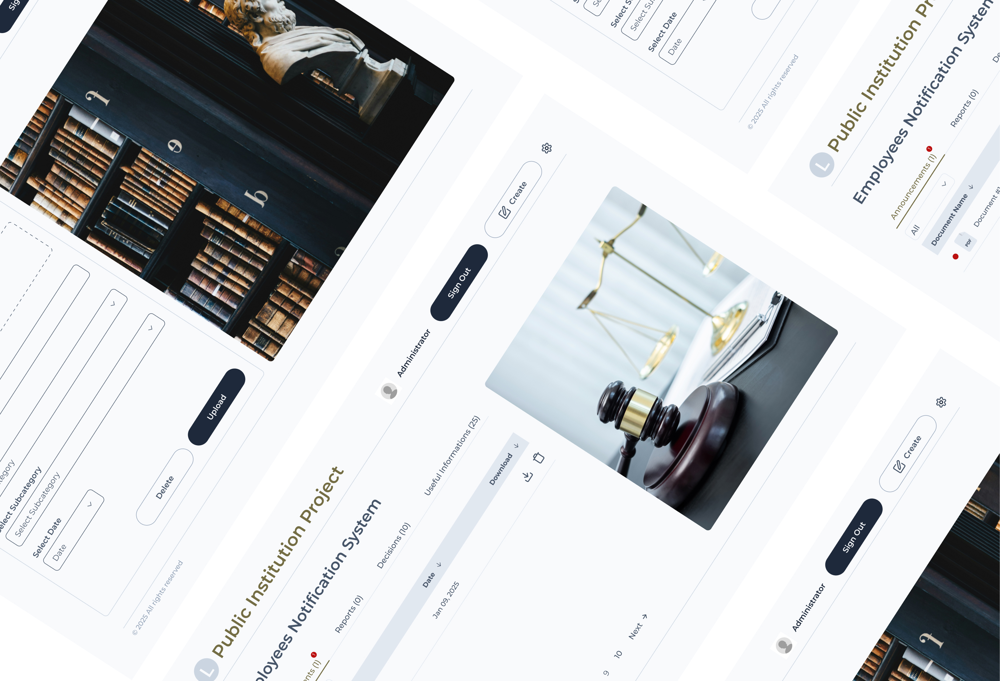
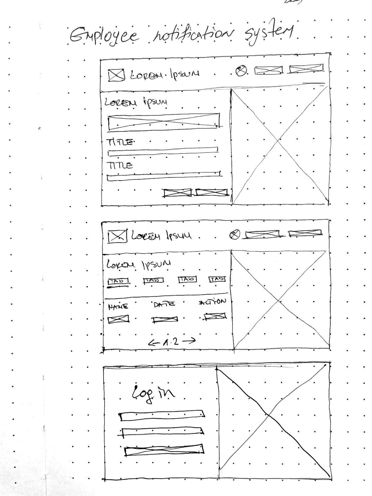
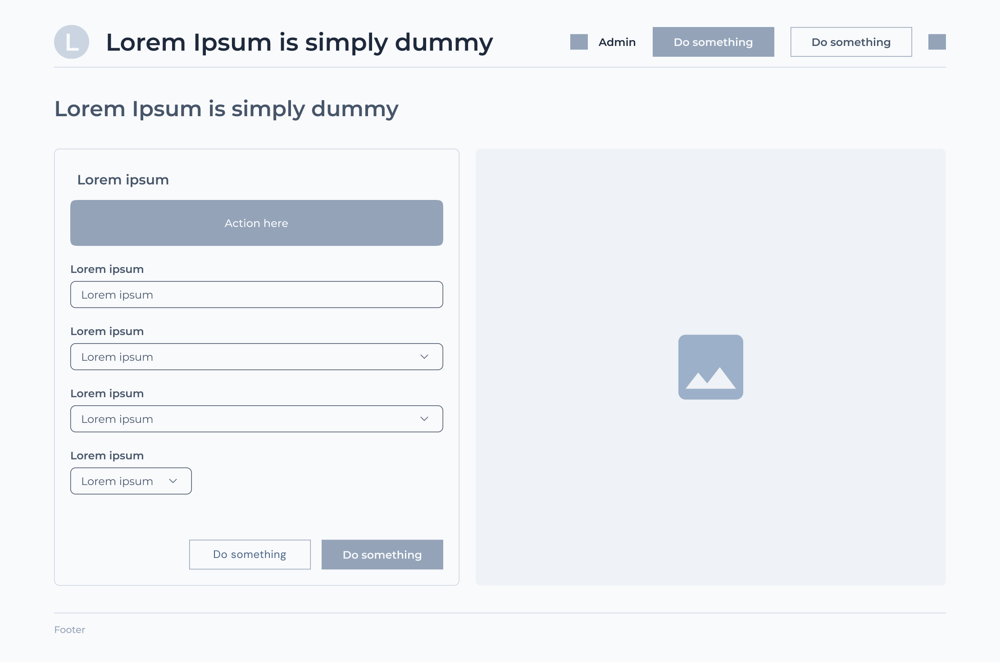
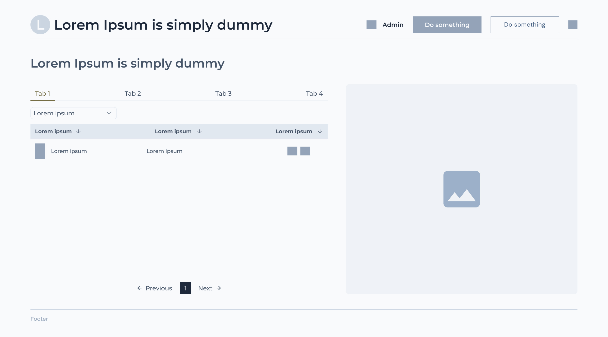
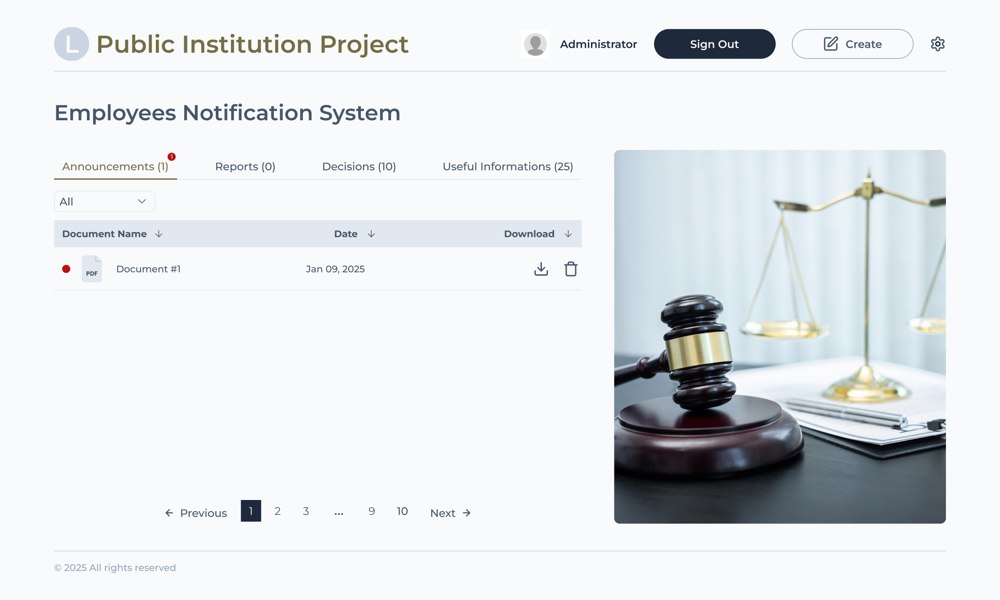
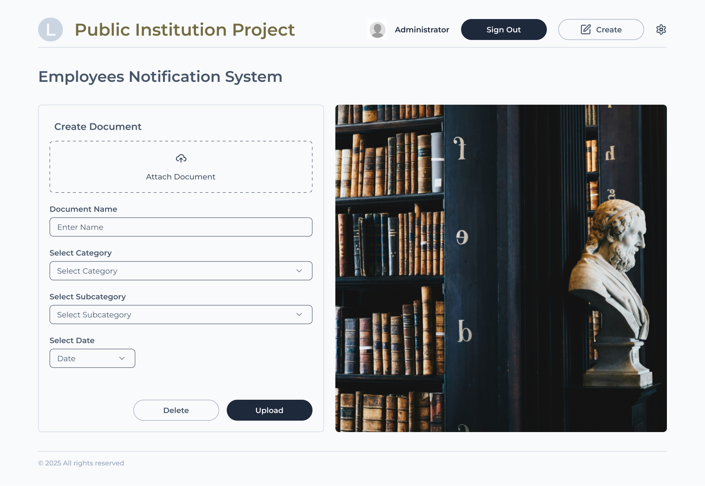

Case study
Notification System for the Primary Court in Ohrid
Role
UX design and frontend development
Team
Marija Popeska with Krstan Popeski
Built with
Next.js and Tailwind CSS
01
The Primary Court in Ohrid needed a better way to share information with its employees. Important notices, announcements and updates needed to be easier to access, without having to search through different places or ask colleagues for information.
That's why we created a web application where employees can find everything they need in one place. After logging in, they can check the latest updates, read notifications and access important information related to their work.
The idea was simple: to make everyday communication easier and give employees a platform that feels clear, organized and easy to use.

02
I worked on the UX/UI design and frontend development. I was responsible for designing the interface and building the frontend, from the first ideas in Figma to the final implementation.
Krstan worked on the backend development, including the database, authentication and the main functionality of the application.
We worked closely together and had several meetings with the court's administration. These conversations helped us understand what employees needed and gave us a better idea of how the application should work in practice.
03
Before starting with the actual design, I wanted to understand how employees worked and what they needed from the application. We had a few meetings with the court's administration, where we discussed their daily tasks, current challenges and ideas for improving the way information was shared.
I focused on understanding the main problems and finding out which parts of the existing process could be made easier. I wanted to make sure the design was based on real needs rather than assumptions.
Once I had a better understanding of the requirements, I started working in Figma. I first created wireframes to plan the layout and organize the content. After that, I moved on to the final designs, paying attention to the overall look, spacing and how easy it would be for employees to find what they needed.



04
After finishing the designs, I moved on to the frontend development using Next.js and Tailwind CSS.
I wanted the final result to stay close to the designs in Figma, while making sure everything worked smoothly. Since the application was mainly intended for desktop use, I focused on creating a clean layout that made good use of the available screen space.
I used Tailwind CSS for styling and created reusable components for elements that appeared across different pages. This helped me keep the design consistent and made it easier to make changes along the way.
I also added interactive elements such as dropdowns, tooltips and buttons to make the application easier to navigate and use.
Some of the things I worked on:


05
Krstan was responsible for the backend development, which handles the main functionality of the application.
He worked on user authentication using JWT tokens, password hashing and different permissions for regular users and administrators. This allowed the application to control who could access information and who could manage notifications.
The backend also includes REST APIs for handling notifications and user actions, with MongoDB used to store the data through Mongoose.
Protected routes are managed through middleware, while login and other necessary public routes remain accessible. Docker was also used to make the application easier to deploy and run.